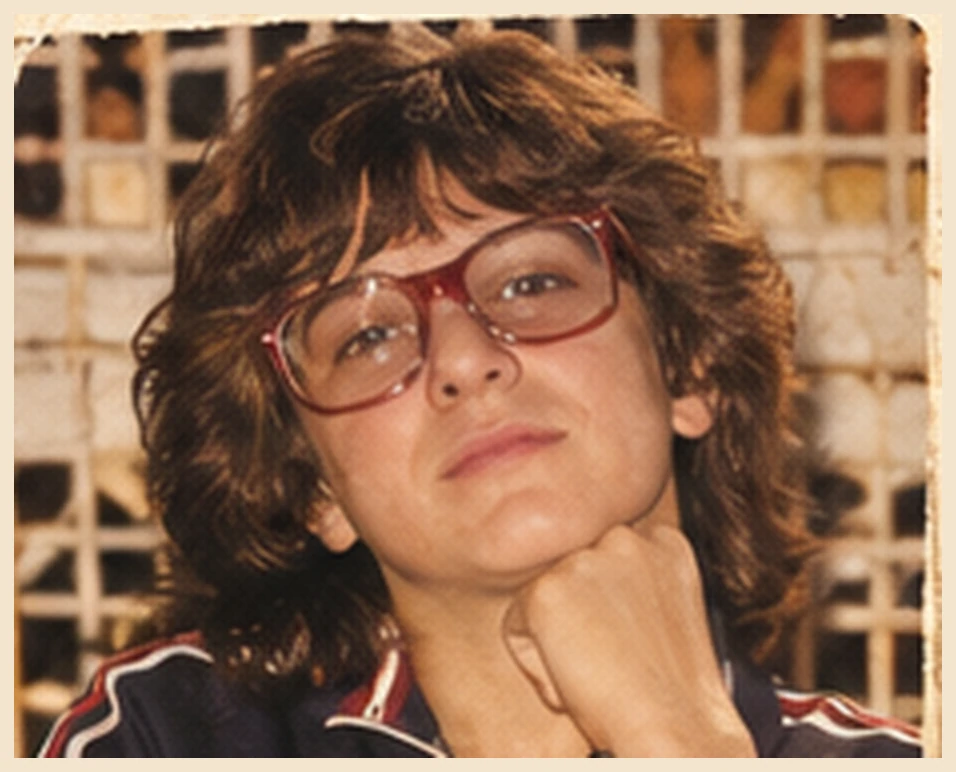
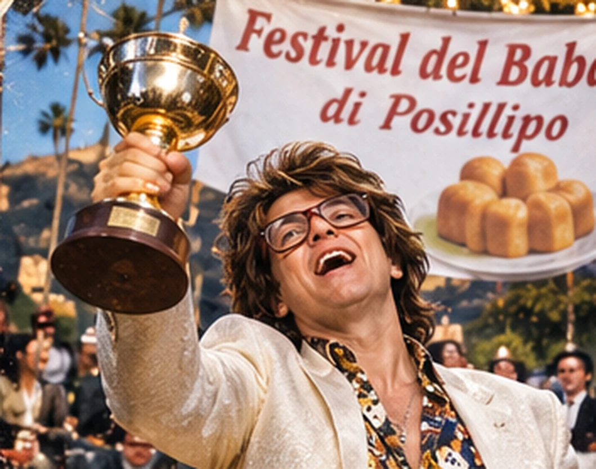
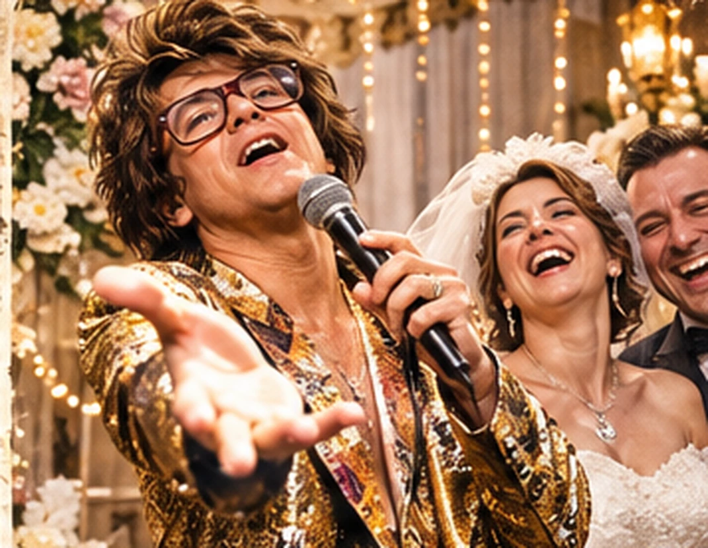

1971
La culla: il primo assolo
Nel 1971 nasce a Napoli un bambino che la madre ricorda per la voce straordinaria. Il primo pianto dura undici minuti. In nursery trasferiscono gli altri neonati; Tony lo considera il suo primo concerto a porte chiuse.
55 anni di vita. Una carriera internazionale. Un solo protagonista.
Tony Vesuvio nasce a Napoli nel 1971. Da allora ha dedicato la propria vita alla musica, all’amore e alla ricerca di un pubblico all’altezza del suo talento. Non sempre lo ha trovato. Ma ha continuato a cantare lo stesso.
Nel 1971 nasce a Napoli un bambino che la madre ricorda per la voce straordinaria. Il primo pianto dura undici minuti. In nursery trasferiscono gli altri neonati; Tony lo considera il suo primo concerto a porte chiuse.
A sei anni entra nel coro della parrocchia. Il parroco insiste sull’importanza di cantare tutti insieme. Tony è d’accordo, a condizione che gli altri facciano piano. Dopo pochi mesi lascia il gruppo per divergenze sulla direzione musicale.

Alle elementari trasforma le interrogazioni in esibizioni. Alla domanda «Dove si trova il Vesuvio?» risponde: «Dovunque mi chiamano a cantare». La maestra gli dà quattro. Tony lo inserisce tra i primi giudizi controversi della critica.
A quattordici anni lavora al banco del pesce. Qui impara a farsi ascoltare in mezzo al rumore e a distinguere chi ha intenzione di comprare da chi vuole soltanto guardare. Il titolare gli chiede di vendere le alici senza dedicare loro una serenata. Tony lascia il lavoro per incompatibilità artistica.
A diciotto anni si imbarca. Canta per equipaggi di diverse nazionalità e scopre un vantaggio decisivo: in mare gli spettatori non possono lasciare facilmente il concerto. Un comandante lo interrompe per l’attracco. Tony lo ricorderà come il primo episodio di censura in acque internazionali.

È la grande occasione. Tony si esibisce nell’intervallo del Festival del Babà di Posillipo e torna a casa con una coppa. Più tardi scopre che era destinata al miglior babà tradizionale. Non la restituisce: «Il premio è importante. La motivazione è un dettaglio».

Nei ricevimenti Tony perfeziona un’arte: restare protagonista anche quando la cerimonia è dedicata ad altre due persone. Una volta chiede di ripetere lo scambio delle fedi: nel primo filmato era fuori inquadratura. La sua definizione professionale resta immutata: «Io non canto ai matrimoni. Sono i matrimoni che vengono organizzati dove canto io».
Si esibisce per famiglie italiane residenti all’estero. A New York canta nel Queens davanti a centottanta invitati. Sul materiale promozionale compare «Tony conquista New York». In Germania riceve una standing ovation: gli ospiti si sono alzati per il buffet. Lui non ritira il comunicato.
A 55 anni Tony torna alla conquista del pubblico con canzoni, video e nuove storie. Non ama definirsi una leggenda: preferisce che lo dicano gli altri. Per facilitarli, lo ha già scritto sul sito. E se qualcosa va storto, resta una sola certezza: «Aggia cantà».
«Ho cantato in chiesa, al mercato, sulle navi e ai matrimoni. Ho visto gente piangere, sposarsi e separarsi. E c’ero sempre io. A volte anche perché mi avevano chiamato per farmi smettere. Ma io aggia cantà.»